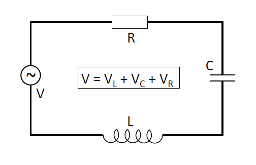

Linear Ordinary Differential Equations#
Differential equations crop up all the time in Physics, so it worth us spending some time to learn many different techniques for solving them.
Some examples
Newtonian Mechanics
Motion of a point mass \(m\) subjected to an external force \(F\):
Quantum Mechanics
Schrodinger equation:
Electrical Circuits
Let \(R\), \(C\), and \(L\) be parameters of the circuit in the figure below:

The charge on the capacitor \(q(t)\) is a function of time \(t\). To find the dependence of the current \(I\) on time, find the total voltage drop along the circuit:
Since \(I(t) = \frac{\mathrm{d}q(t)}{dt}\), after differentiating with respect to \(t\), we obtain:
In general, coefficients may also depend on a variable:
Definitions#
Ordinary Differential Equation (ODE)#
An ordinary differential equation (ODE) is a relation between a function of one variable \(u(x)\), the variable \(x\), and the function’s first and higher derivatives with respect to the variable \(x\):
For example:
Partial Differential Equation (PDE)#
A partial differential equation (PDE) is a relation between a function of several variables \(u(x_1, x_2, \ldots, x_N)\), variables \(x_1, x_2, \ldots, x_N\), and the function’s first and higher derivatives with respect to these variables:
Linear Ordinary Differential Equation#
A linear ordinary differential equation is a relation of the form:
This definition is valid for any order of the DE. Coefficients \(a_k\) (for \(k = 0,1, \ldots\)) and \(b\) may or may not be functions of \(x\).
Examples:
Linear: \(y' + 5 = -6y\)
Non-linear: \(yy' + 5 = -6y\), \(y'^2 + 5 = 6xy\), \(y' + 5 = -\sin(6y)\)
Linear First-Order ODE#
The purpose of this section is to obtain the general solution of the equation:
For simplicity, we will write \(y\), \(P\), and \(Q\) instead of \(y(x)\), \(P(x)\), and \(Q(x)\).
Homogeneous First-Order ODE#
First, consider the case where \(Q(x) = 0\):
or
This equation is separable:
The solution can be obtained by integrating both parts:
where \(C\) is a constant. Thus, \(y\) can be written as:
where \(A = e^C\) is a constant. It is convenient to introduce the function \(S(x)\):
and
Then:
or:
By differentiating both sides of this equation:
Inhomogeneous First-Order ODE#
For the inhomogeneous equation:
We can use this form of the perfect derivative to rewrite this equation as:
where \(e^{S(x)} = e^{\int p \,\mathrm{d}x}\) is known as the integrating factor.
Integration of both sides with respect to \(x\) gives:
Thus, the general solution of the linear first-order DE is:
where \(S(x) = \int P(x) \,\mathrm{d}x\).
Example#
Find the solution of:
In our notation, \(P(x) = 1\) and \(Q(x) = e^x\). First, consider the homogeneous equation and find \(S(x)\):
For the inhomogeneous equation:
Linear Second-Order Homogeneous Equations#
Consider homogeneous equations with constant coefficients:
Let \(D\) denote the differential operation \(D = \frac{\mathrm{d}}{\,\mathrm{d}x}\). Then, the above ODE can be rewritten as:
where \(\lambda_1\) and \(\lambda_2\) are roots of the characteristic equation:
with respect to \(\lambda\). The solutions of this equation are:
Roots of the Characteristic Equation#
To solve a second-order ODE, we first need to find the roots of the corresponding characteristic equation. This equation is quadratic and may have three types of solutions:
Two different real roots \( \lambda_1 \neq \lambda_2 \)
Complex conjugate roots \( \lambda_{1,2} = a \pm ib \)
Two identical real roots \( \lambda_1 = \lambda_2 = \lambda \)
Case 1: \( \lambda_1 \neq \lambda_2 \)#
The general solution is a superposition of the two individual solutions:
Case 2: \( \lambda_{1,2} = a \pm ib \)#
For this case, the solution is:
Since \( \lambda_1 \) and \( \lambda_2 \) are related, we can rewrite this as:
Using Euler’s formula \( e^{\pm i \theta} = \cos \theta \pm i \sin \theta \), we can write the solution as:
Thus, the general solution for this case is:
Case 3: \( \lambda_1 = \lambda_2 \)#
In this case, the differential equation can be written as:
One solution is:
But there will still be another solution to this ODE, to find it consider the second solution having the form:
where \(f(x)\) is a function to be found - we can think of \(f(x)\) here is a bridging function between the different solutions \(y_1,\,y_2\).
If we differentiate, we find:
So if we substitute into the ODE and then group terms by common factors:
The first bracket will disappear as \(y_1(x)\) is a solution to the homogeneous equation. The second bracket also disappears since in this case, with a repeated root \(\lambda = \frac{-a_1}{2a_2}\) and so:
This leaves \(f''(x)=0\) and so integrating up:
Which means the full solution is:
We call this method of using known solutions to find unknown solutions Reduction of Order - typically we apply this to find solutions to homogeneous equations (we will encounter further methods to solve inhomogeneous equations later).
Alternatively we can think of this as a sourced first order problem:
Then the equation becomes:
From this, we get:
Substituting this into \( u = (D - \lambda) y \), we have:
This is a first-order ODE, with the general solution:
So the general solution in this case is:
Varying Coefficients - Euler Equations#
Up until now we have considered the case of constant coefficients in the second order differential case:
But like in the first order problem case, there is nothing to stop us allowing varying coefficients:
Whilst the space of functions we can choose for \(a_2(x),\, a_1(x),\, a_0(x)\) is vast, lets start by trying to solve problems of the form:
These are known as Euler Equations.
We do so by using an ansatz of the form \(y = x^n\), which means that:
A quadratic (which we call the characteristic equation) that we can solve:
which means there are three distinct cases to solve for here (to begin with assume \(x > 0\) to avoid any additional complications with complex solutions)
1. Two distinct, real roots \(n = n_1,\, n_2\)
Since the ODE () here is linear, we can find the superposition of solutions:
2. One repeated, real root \(n\)
We find that solving the characteristic equation, the only root is:
giving a solution \(y_1 = Ax^n\). But there should be two solutions to the ODE (), so we can use an ansatz of the form:
to find \(y_2\), by solving for \(f(x)\).
Using this ansatz, the ODE takes the form:
This can be simplified straight away since we are using the value of \(n\) which satisfies the characteristic equation \(an(n-1) + bn + c = 0\), therefore the equation reduces to:
using the fact that \(\displaystyle n = \frac{a-b}{2a} \Rightarrow 2an + b = a\) means:
which can be solved as a linear 1st order ODE in \(f'\):
which means the form of \(f(x)\) is given by:
and therefore the solution here is:
3. Two complex roots \(n = \lambda \pm i\mu\)
We can solve the characteristic equation here, with the proviso \((b-a)^2 - 4ac < 0\):
If we look at the solutions here, lets start with \(n = \lambda + i \mu\):
where we have used the Euler function to convert this expression into one with trigonometric and power law functions. We could do a similar exercise with \(y_2\), the only difference here being a \(-\) sign in the middle, so the overall solution \(y = y_1 + y_2\) can be written as:
where \(A,\, B \in \mathbb{C}\) in general, but with real boundary conditions they will turn out to be real.
Other ranges of \(x\)#
So far we have taken \(x>0\) to ensure all of our solutions here are real, however if we look again at the Euler equation, taking a coordinate transformation \(t = -x\) and defining a function \(z\) such that:
then this means that:
and therefore () reads as:
This shows that for \(t>0\) we can still have real solutions to this ODE, there would follow the same form as those found for \(>0\) - but this range corresponds to \(x<0\)!
Looking at how this could change the solutions, say for case (1) with real, distinct roots in \(n\):
Therefore the argument of these solutions is always \(|x|\) irrespective of whether \(x<0\) or \(x > 0\), therfore we modify our solutions to be of the form:
1. \(y = A\,x^{n_1} + B\,x^{n_2} \longrightarrow y = A\,|x|^{n_1} + B\,|x|^{n_2}\)
2. \(y = x^n\,\left(A \ln(x) + B\right) \Longrightarrow y = |x|^n\,\left(A \ln|x| + B\right)\)
3. \(y = x^{\lambda}\left(A\cos(\mu\ln(x)) + B \sin(\mu\ln(x))\right) \longrightarrow y = |x|^{\lambda}\left(A\cos(\mu\ln| x|) + B \sin(\mu\ln|x|)\right)\)
We notice that \(x=0\) is not covered by these solutions as it corresponds to \(cy=0\).
By a similar principle, we could define a variable of the form \(t = x - s\), with predicably similar behaviour, therefore we can also shift the ODe to be of the form:
giving solutions of the form: 1. \(y = A\,x^{n_1} + B\,x^{n_2} \longrightarrow y = A\,|x-s|^{n_1} + B\,|x-s|^{n_2}\)
2. \(y = x^n\,\left(A \ln(x) + B\right) \Longrightarrow y = |x-s|^n\,\left(A \ln|x-s| + B\right)\)
3. \(y = x^{\lambda}\left(A\cos(\mu\ln(x)) + B \sin(\mu\ln(x))\right) \longrightarrow y = |x-s|^{\lambda}\left(A\cos(\mu \ln|x-s|) + B \sin(\mu\ln|x-s|)\right)\)
however it is also clear here that this solution cannot contain the point \(x=s\).
Worked example
Solve the following ODE:
Using the ansatz \(y = x^n\), then:
which means that the ODE can be written as:
which means that \(n = \pm 1\) and therefore the solution will be of the form:
Further worked examples
1. Solve the ODE \(x^2y'' - 2y = 0, \qquad x >0\)
Using the ansatz \(y = x^n\):
which has roots of \(n = -1,\, 2\) and hence
2. Solve the ODE \(x^2\,y'' - 3x\,y' + 4y = 0, \qquad x >0\)
Using the ansatz \(y = x^n\):
which has a repeated root of \(n=2\), so one of the solutions is \(y = Ax^2\). We can then use:
substituting these results in we find:
which means we have to solve:
Using the integrating factor method, with \(\mu = e^{\int \frac{1}{x}\,\mathrm{d}x} = x\) we find:
and so the solution is found as:
where \(C,\, D\) are constants to be found, so the final solution is:
3. Find the solution to the following differential equation on any interval not containing \(x = - 6\):
Using the ansatz \(y = |x+6|^n\) we find:
which is solved for \((3n - 2)(n + 8) = 0\) nd so \(n = \frac{2}{3}, \,-8\), meaning that the general solution is of the form: